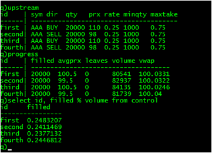

This series looks at building a near full-scale application in q and, in the process, tries to answer questions on the amount of code a q application requires, and how that code can be organised so that it is both comprehensible and straightforward to change. The target application is a participation strategy and some of its associated testing framework.
In this installment the basic structure of the strategy is built and tested with the "far" execution tactic. Previously in this series: a participation strategy specification. Next: the strategy with the "near" execution tactic.
Before looking at the code, here is an example of the strategy operating with the "far" tactic only. Four orders were loaded, identical in all but direction. The show was kicked off with the following order in a user session:
enter update qty: 5000, prx: 100.5 from template
The strategies react and execute within their minqty and maxtake constraints.

All the orders completed and are close to their target rate, despite there being only one liquidity provider (the market maker) and that two orders are both competing the grab each side of the book. The quote of AAA is engineered not change throughout the test so the average prices of execution are as expected, the bid and ask as appropriate. However, as the specification suggests on execution prices, note the VWAP figures.
The strategy needs basic operations to compares prices and select the right figures from quotes. All of these operations depend upon the direction of the order. This small file contains several functions to eliminate tests for buying and selling in the strategy or tactic code. For example, the "far" tactic can use
far: [id.dir; bidqty; askqty]to get the ask quantity for buy orders and the bid quantity for sell orders.
All upstream orders have a limit price, prx. The strategy must ignore traded volume it could never participate in. Likewise for quotes that move beyond the limit price. filter.q provides the filters for both trades and quotes, returning the data labelled with the upstream order id. For example, with three orders 001, 002 and 003 all trading the same symbol, and a trade which is within the limit price for only the last two orders, the trade filter will return the trade twice: one row labelled with 002 and another labelled 003.
One of the principal design issues with the strategy is how it can operate without knowing which tactics are being used. In the world of object orientation, this would be done through an interface of methods that all the tactics implement. In the q world we can also invoke all those implementations in one call. tactic.q contains a now familiar pattern: a number of function dictionaries, with one dictionary per "method". The dictionaries are added from different files, so one script file may define
.tactic.traded [`far]: {...}
and another script may define
.tactic.traded [`near]: {...}
To invoke all members of the dictionary at once, the strategy needs only leave the index onto the dictionary blank:
.tactic.traded [; x]
The strategy defines the upstream and downstream order tables, and adds further tables for its own control purposes.
progress keeps the performance figures for the each order, over the whole executable life of the order. Aside from the expected filled and leaves, the strategy keeps track of all the eligible volume and market volume weighted average price (VWAP).
control also defines filled and volume but these figures apply to the current value of the participation rate - this anticipates the ability to change the rate during the life of the order.
The strategy follows the equally familiar pattern of upd functions. These are useful when rows in a table are removed as they flow through the "pipeline" of logic and which could result in an empty table. This certainly applies to the filtering of trades and quotes. The downstream, qx facing, upd functions handle the accounting of market data and fills. The latter is quite lengthy as it needs to keep the downstream orders, progress and control tables aligned. Apart from accounting, the strategy functions delegate augmented data to the tactics for them to make execution decisions.
far.q decides on when and how much to execute. It defines its own control table, controlfar for the quantity allocated to the tactic (at this stage all of the order quantity is). The implementations of the tactic members do some administration, filtering and then delegate to a upd pipeline:
maxtake cap - more on this later
Orders that are constrained by maxtake need special attention. Imagine a large trade which prompts far.q to act but is constrained to take only half the far side. far.q will then react to its own trade in the market data and take a further half, and so on: far.q will have taken 1 ⁄ 2, 1 ⁄ 4, 1 ⁄ 8 ... of the far side in succession. This is prevented by a rule that, if constrained by maxtake, subsequent orders are only sent when the far side is at least the same size as the original order. This is built into the decision step of the pipeline.
Algorithms operate in a highly asynchronous and noisy environment. Despite kdb+ being single threaded and qx so well behaved, there can be four processes operating concurrently: qx, the market maker, the user script and the participation strategy. With that degree of concurrency it is inevitable the quotes in the symbol can arrive before fills. far.q copes with this by marking when a fill is pending in the action part of the pipeline, which is cleared when far.q looks at fills. This required a change in qx so that it returned a zero fill if no matching occured for an IOC.
In addition to the zero-fill fix for qx.q, a function to snap several or all quotes was added to the script and marketmaker.q was changed to use it instead of grabbing the full quotes table.
This installment has added nearly doubled the lines of code, from 223 to 396:
| Lines of code | ||
|---|---|---|
qx.q | 112 | |
participation.q | 76 | |
marketmaker.q | 72 | |
far.q | 54 | |
schema.q | 18 | |
filter.q | 18 | |
user.q | 12 | |
tactic.q | 11 | |
seq.q | 9 | |
global.q | 5 | |
member.q | 4 | |
util.q | 3 | |
process.q | 2 | |
| 396 |
| 1. | www.kx.com | |
| 2. | Further updates, and more q code, can be found at code.kx.com. This is a secure site: for browsing the user name is anonymous with password anonymous. |